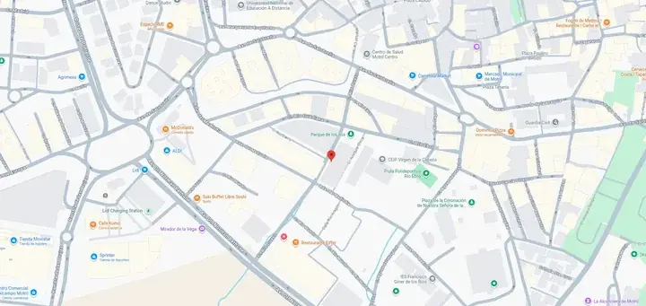

Enfermedades agudas y crónicas
Diagnóstico, tratamiento y seguimiento de procesos puntuales (infecciones, dolor, malestar general) o patologías de larga evolución, además de segunda opinión e interpretación de analíticas.
Consulta privada sin esperas en Contigo Centro Médico (Motril). Diagnóstico con ecografía clínica en la misma visita.


Médica de Familia apasionada por las personas
Entiendo la medicina no solo como la cura de enfermedades, sino como el cuidado integral de la persona.
Atiendo en consulta privada como médica de cabecera, en Contigo Centro Médico (Motril).
Mi consulta es un espacio seguro donde te escucharé con atención y cariño. Combino la calidez humana con herramientas diagnósticas avanzadas como la ecografía clínica para darte las respuestas que necesitas.
Trato humano y personalizado.
Atención primaria cercana y continuada.
Ecografía clínica en consulta.
Nativo
Bilingüe
Medicina de familia para adultos, con tiempo para escucharte, un diagnóstico preciso y un plan claro para tu salud.
Diagnóstico, tratamiento y seguimiento de procesos puntuales (infecciones, dolor, malestar general) o patologías de larga evolución, además de segunda opinión e interpretación de analíticas.
Revisiones de salud adaptadas a tu edad y antecedentes, certificados médicos ordinarios y consejo práctico sobre alimentación, ejercicio y descanso.
Ecografía clínica en consulta (abdominal, tiroidea, renal, musculoesquelética y partes blandas) realizada en la misma visita para agilizar el diagnóstico.
Seguimiento en consulta, sin visitas a domicilio.
Resolvemos las dudas más habituales de nuestros pacientes antes de la primera consulta.
La Medicina de Familia es la especialidad médica que se encarga del cuidado integral, continuo y personalizado de las personas a lo largo de toda su vida. A diferencia de otras especialidades que se centran en un órgano o sistema concreto, el médico de familia aborda a la persona en su conjunto: previene enfermedades, diagnostica y trata patologías agudas y crónicas, realiza seguimiento de factores de riesgo y coordina con especialistas cuando es necesario. En nuestra consulta en Motril, combinamos esta visión global con herramientas como la ecografía clínica para ofrecerte un diagnóstico más rápido y preciso.
Sí, todas las consultas se realizan con cita previa para garantizar que cada paciente dispone del tiempo necesario. Puedes solicitar tu cita a través de WhatsApp o contactando directamente con Contigo Centro Médico, donde ejercemos. El proceso es sencillo y rápido: nos indicas el motivo de la consulta y coordinamos el horario que mejor se adapte a ti.
Para la primera visita, te recomendamos traer tu tarjeta sanitaria, cualquier analítica reciente o informe médico que tengas, y una lista de los medicamentos que tomas actualmente (incluyendo dosis y frecuencia). Si tienes antecedentes familiares relevantes (diabetes, hipertensión, cáncer), también es útil anotarlo. Con esta información podremos ofrecerte un diagnóstico más preciso y un plan de salud personalizado desde el primer momento.
La ecografía clínica es una técnica de diagnóstico por imagen que utiliza ondas sonoras de alta frecuencia para visualizar órganos internos, tejidos y estructuras del cuerpo sin radiación ni dolor. En nuestra consulta de Motril, realizamos ecografías abdominales (hígado, vesícula, páncreas, riñones), tiroideas, renales, musculoesqueléticas y de partes blandas directamente en la misma visita. Esto permite confirmar un diagnóstico, valorar una patología o realizar un seguimiento sin necesidad de derivarte a un centro externo, ahorrando tiempo y facilitando un tratamiento más rápido.
Un chequeo de salud adaptado a tu edad, sexo y antecedentes incluye una exploración física completa, revisión de factores de riesgo cardiovascular (tensión arterial, colesterol, glucemia), valoración del estado nutricional, interpretación de analíticas de sangre y orina, y, cuando está indicado, una ecografía clínica. Al finalizar, recibirás un informe con las conclusiones y un plan de prevención y seguimiento personalizado. Es una herramienta fundamental para detectar problemas de salud de forma temprana y mantener un envejecimiento saludable.
La Dra. Beatriz Jiménez Canet ejerce en Contigo Centro Médico, que colabora con diversas aseguradoras como DKV, Mapfre, Sanitas, ASSSA y FIATC. Te recomendamos consultar directamente con la clínica para verificar si tu seguro está cubierto. Si no dispones de seguro médico, también puedes acudir como paciente privado; los honorarios se comunican con antelación para que conozcas el coste antes de la consulta.
Sí. La Dra. Beatriz Jiménez Canet es bilingüe en español e inglés, por lo que puede atenderte completamente en inglés si lo prefieres. Esto es especialmente útil para pacientes expatriados o turistas que necesitan atención médica en Motril y la Costa Tropical de Granada sin barreras idiomáticas.
Las recetas médicas se emiten tras la consulta médica correspondiente. Para certificados médicos ordinarios (por ejemplo, para prácticas deportivas o trámites administrativos), es necesario acudir a una consulta presencial donde se realice la exploración clínica requerida. Puedes solicitar este tipo de trámites al pedir cita indicando el motivo específico.
Atención privada sin esperas en Calle Río Duero, 5.
Lunes a Viernes: 9:00-13:00 y 16:00-20:00
Sábados: 10:00-12:00
Horario sujeto a confirmación: consulta con la clínica antes de tu visita.
